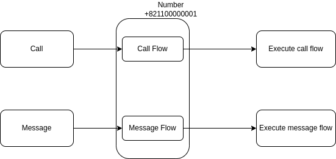

Number¶
A number is a phone number provisioned on the VoIPBIN platform that can be bound to flows for handling incoming calls and messages.
API Reference: Number endpoints
Overview¶
Note
AI Context
Complexity: Low-Medium
Cost: Chargeable for normal numbers (provider purchase fee). Virtual numbers (+899 prefix) are free but subject to tier-based limits.
Async: No.
POST https://api.voipbin.net/v1.0/numbersfor virtual numbers returns immediately with statusactive. Normal number provisioning may returnpurchase-pendinguntil provider confirms.
VoIPBIN’s Number API enables you to provision, manage, and configure phone numbers for your communication applications. Numbers serve as the entry points for inbound calls and messages, and can be configured with custom flows for automated handling.
With the Number API you can:
Search and provision phone numbers from available inventory
Configure call and message handling flows
Port existing numbers from other providers
Manage number settings and metadata
Release numbers when no longer needed
How Numbers Work¶
Numbers connect external callers to your VoIPBIN applications through configurable flows.
Number Architecture
+-----------------------------------------------------------------------+
| Number System |
+-----------------------------------------------------------------------+
External World VoIPBIN Your Application
| | |
| Inbound call/SMS | |
| to +15551234567 | |
+------------------------------>| |
| | |
| +------+------+ |
| | Number | |
| | +1555123... | |
| +------+------+ |
| | |
| +-----------+-----------+ |
| | | |
| v v |
| +------------+ +------------+ |
| | call_flow | | msg_flow | |
| +------+-----+ +------+-----+ |
| | | |
| v v |
| Execute flow Execute flow |
| (IVR, AI, (auto-reply, |
| queue, etc.) forward, etc.) |
| | | |
| +--------->+<-----------+ |
| | |
| v |
| +-----------+ |
| | Webhook |------------------------->|
| +-----------+ |
Key Components
Number: A phone number provisioned in VoIPBIN
Call Flow: Actions to execute when a call arrives
Message Flow: Actions to execute when an SMS/MMS arrives
Webhook: Notifications sent to your application
Number Lifecycle¶
Numbers progress through predictable states from provisioning to release.
Number States
Search available numbers
|
v
GET /available_numbers
|
| POST /numbers (provision)
v
+------------+
| active |
+-----+------+
|
| DELETE /numbers/{id}
v
+------------+
| deleted |
+------------+
State Descriptions
State |
What’s happening |
|---|---|
active |
Number is provisioned and ready to receive calls/messages |
deleted |
Number has been released and is no longer active |
Provisioning Numbers¶
Provision numbers through a two-step process: search, then provision.
Note
AI Implementation Hint
Normal number provisioning requires a real provider purchase and costs money. For development and testing, use virtual numbers (type=virtual) which are free and instantly available. Search with GET https://api.voipbin.net/v1.0/available_numbers?type=virtual and provision with POST https://api.voipbin.net/v1.0/numbers using a +899 prefixed number.
Step 1: Search Available Numbers
$ curl -X GET 'https://api.voipbin.net/v1.0/available_numbers?token=<token>&country=US&type=local'
Response:
{
"result": [
{
"number": "+15551234567",
"country": "US",
"type": "local",
"region": "California",
"city": "San Francisco"
},
{
"number": "+15551234568",
"country": "US",
"type": "local",
"region": "California",
"city": "Los Angeles"
}
]
}
Step 2: Provision the Number
$ curl -X POST 'https://api.voipbin.net/v1.0/numbers?token=<token>' \
--header 'Content-Type: application/json' \
--data '{
"number": "+15551234567"
}'
Flow Execution¶
VoIPBIN’s Number resource allows you to associate multiple flows with a single number for handling different types of communications.
Flow Configuration
+-----------------------------------------------------------------------+
| Number Flow Configuration |
+-----------------------------------------------------------------------+
Number: +15551234567
+-----------------------------------------------------------------------+
| |
| call_flow_id: "flow-abc-123" |
| +---------------------------+ |
| | Inbound Call Flow | |
| | 1. Play greeting | |
| | 2. Collect DTMF | |
| | 3. Route to queue | |
| +---------------------------+ |
| |
| message_flow_id: "flow-xyz-789" |
| +---------------------------+ |
| | Inbound Message Flow | |
| | 1. Parse keywords | |
| | 2. Auto-reply | |
| | 3. Forward to agent | |
| +---------------------------+ |
| |
+-----------------------------------------------------------------------+

Note
AI Implementation Hint
A call_flow_id or message_flow_id set to 00000000-0000-0000-0000-000000000000 means no flow is assigned. Inbound calls or messages to a number without an assigned flow will not be handled. Always create a flow via POST https://api.voipbin.net/v1.0/flows first, then assign it to the number via PUT https://api.voipbin.net/v1.0/numbers/{id}.
Configure Flows
$ curl -X PUT 'https://api.voipbin.net/v1.0/numbers/<number-id>?token=<token>' \
--header 'Content-Type: application/json' \
--data '{
"call_flow_id": "flow-abc-123",
"message_flow_id": "flow-xyz-789"
}'
Number Types¶
VoIPBIN supports various number types for different use cases.
Type |
Description |
|---|---|
local |
Geographic numbers tied to a specific city or region |
toll-free |
Numbers that are free to call (e.g., 1-800) |
mobile |
Mobile phone numbers (where available) |
virtual |
Virtual numbers with +899 prefix. No provider purchase required. Designed for non-PSTN callers such as AI calls, WebRTC calls, and internal routing. |
Normal vs Virtual Number Routing
Normal numbers are routed through an external provider (Telnyx/Twilio) from the PSTN, while virtual numbers are routed internally from non-PSTN callers (AI calls, WebRTC, SIP clients) without any provider involvement.
Normal Number (e.g. +15551234567)
==================================
PSTN/Mobile Your Application
| |
| Outbound call from PSTN |
| to +15551234567 |
+------------> Telnyx/Twilio (provider) |
| |
v |
+-----------+ |
| Kamailio | |
+-----+-----+ |
| |
v |
+-----------+ +----------+ +-----------+ |
| Asterisk |---->| Number |---->| Call Flow |--+-->
+-----------+ | Lookup | | Execution | |
+----------+ +-----------+ |
type: normal |
provider: telnyx |
Virtual Number (e.g. +899123456789)
====================================
Non-PSTN Caller Your Application
(AI, WebRTC, SIP) |
| |
| Call from non-PSTN caller |
| to +899123456789 |
+--------------- No Provider needed |
| |
v |
+-----------+ |
| Kamailio | |
+-----+-----+ |
| |
v |
+-----------+ +----------+ +-----------+ |
| Asterisk |---->| Number |---->| Call Flow |--+-->
+-----------+ | Lookup | | Execution | |
+----------+ +-----------+ |
type: virtual |
provider: none |
Comparison
Aspect |
Normal Number |
Virtual Number |
|---|---|---|
Format |
E.164 (e.g. +15551234567) |
+899 prefix (+899XXXXXXXXX) |
Provider |
Telnyx or Twilio |
None (internal only) |
Inbound routing |
PSTN -> Provider -> VoIPBIN |
Non-PSTN caller -> VoIPBIN |
Flow execution |
Same (call_flow/message_flow) |
Same (call_flow/message_flow) |
Best for |
Production, external callers |
AI, WebRTC, internal routing |
For billing and cost details, see Billing Account.
Virtual Number Tier Limits
Virtual numbers are free to create but subject to tier-based limits. When the limit is reached, further virtual number creation is denied. See Plan Tiers for tier limits and billing details.
Common Scenarios¶
Scenario 1: Customer Service Hotline
Set up a number for inbound customer calls.
1. Search for toll-free number
GET /available_numbers?country=US&type=toll_free
2. Provision the number
POST /numbers { "number": "+18005551234" }
3. Create IVR flow
- Greeting message
- Menu options (1=Sales, 2=Support, 3=Billing)
- Route to appropriate queue
4. Assign flow to number
PUT /numbers/{id} { "call_flow_id": "..." }
Result:
+--------------------------------------------+
| Caller dials 1-800-555-1234 |
| -> Hears: "Welcome to Company X..." |
| -> Press 1 for Sales |
| -> Connected to sales queue |
+--------------------------------------------+
Scenario 2: SMS Auto-Responder
Configure automatic SMS responses.
1. Provision local number for SMS
POST /numbers { "number": "+15551234567" }
2. Create message flow
- Check for keywords (HOURS, HELP, STOP)
- Send appropriate auto-reply
- Forward unknown messages to agent
3. Assign message flow
PUT /numbers/{id} { "message_flow_id": "..." }
Result:
+--------------------------------------------+
| Customer texts "HOURS" |
| -> Auto-reply: "We're open Mon-Fri 9-5" |
+--------------------------------------------+
Scenario 3: Virtual Number for Testing
Create a virtual number for development and testing without purchasing from a provider.
1. Search for available virtual numbers
GET https://api.voipbin.net/v1.0/available_numbers?type=virtual&page_size=5
2. Provision the virtual number
POST /numbers { "number": "+899100000001" }
3. Assign a call flow for testing
PUT /numbers/{id} { "call_flow_id": "..." }
Result:
+--------------------------------------------+
| Virtual number +899100000001 is active |
| -> No provider charges |
| -> Ready for development/testing |
+--------------------------------------------+
Scenario 4: Multi-Purpose Number
Use one number for both calls and messages.
Number: +15551234567
+--------------------------------------------+
| call_flow_id: IVR with queue routing |
| message_flow_id: SMS keyword handler |
+--------------------------------------------+
Inbound call -> Execute call flow
Inbound SMS -> Execute message flow
Best Practices¶
1. Number Selection
Choose local numbers for regional presence
Use toll-free for national customer service
Consider number memorability for marketing
2. Flow Configuration
Always configure both call and message flows
Test flows before going live
Use variables to personalize responses
3. Number Management
Document what each number is used for
Set up monitoring for call/message volumes
Review and update flows regularly
4. Compliance
Follow local regulations for number usage
Include opt-out options for SMS
Maintain records of number provisioning
Troubleshooting¶
Provisioning Issues
Symptom |
Solution |
|---|---|
Number not available |
Try different region or type; number may have been provisioned by another customer |
Provisioning failed |
Check account balance; verify number format; contact support if issue persists |
Call/Message Issues
Symptom |
Solution |
|---|---|
Calls not connecting |
Check flow is assigned; verify flow is valid; test flow in isolation |
Messages not received |
Verify message_flow_id is set; check carrier routing; review webhook logs |
Wrong flow executing |
Verify correct flow ID is assigned to number; check for flow execution errors |
Number¶
Number¶
{
"id": "<string>",
"customer_id": "<string>",
"number": "<string>",
"type": "<string>",
"call_flow_id": "<string>",
"message_flow_id": "<string>",
"name": "<string>",
"detail": "<string>",
"status": "<string>",
"t38_enabled": <boolean>,
"emergency_enabled": <boolean>,
"metadata": {
"rtp_debug": <boolean>
},
"tm_purchase": "<string>",
"tm_renew": "<string>",
"tm_create": "<string>",
"tm_update": "<string>",
"tm_delete": "<string>"
}
id(UUID): The number’s unique identifier. Returned when creating a number viaPOST /numbersor listing viaGET /numbers.customer_id(UUID): The customer who owns this number. Obtained from theidfield ofGET /customers.number(String, E.164): The phone number in E.164 format (e.g.,+15551234567). Must start with+. Virtual numbers use the+899prefix (e.g.,+899100000001).type(enum string): The number’s type. See Type.call_flow_id(UUID): The flow to execute for inbound calls. Obtained from theidfield ofGET /flows. Set to00000000-0000-0000-0000-000000000000if no flow is assigned.message_flow_id(UUID): The flow to execute for inbound messages. Obtained from theidfield ofGET /flows. Set to00000000-0000-0000-0000-000000000000if no flow is assigned.name(String): A human-readable label for the number. Free-form text for organizational use.detail(String): A longer description of the number’s purpose or configuration notes.status(enum string): The number’s current status. See Status.t38_enabled(Boolean): Whether T.38 fax support is enabled on this number.emergency_enabled(Boolean): Whether emergency calling (e.g., 911) is enabled on this number.metadata(Object): Configuration flags for this number. See Metadata.rtp_debug(Boolean): Whentrue, RTPEngine captures RTP traffic as PCAP files for calls to this number. This flag is OR’d with the customer-levelrtp_debug– if either istrue, capture is enabled. Default isfalse.
tm_purchase(string, ISO 8601, nullable): Timestamp when the number was purchased from the provider.nullif not yet purchased or if the number is virtual.tm_renew(string, ISO 8601, nullable): Timestamp when the number was last renewed with the provider.nullif never renewed.tm_create(string, ISO 8601): Timestamp when the number was created.tm_update(string, ISO 8601): Timestamp of the last update to any number property.tm_delete(string, ISO 8601): Timestamp when the number was deleted. Set to9999-01-01 00:00:00.000000if not deleted.
Note
AI Implementation Hint
Timestamps set to 9999-01-01 00:00:00.000000 indicate the event has not yet occurred. For example, tm_delete with this value means the number has not been deleted.
Example¶
{
"id": "0b266038-844b-11ec-97d8-63ba531361ce",
"customer_id": "5e4a0680-804e-11ec-8477-2fea5968d85b",
"number": "+821100000001",
"type": "normal",
"call_flow_id": "d157ce07-0360-4cad-9007-c8ab89fccf9c",
"message_flow_id": "00000000-0000-0000-0000-000000000000",
"name": "test talk",
"detail": "simple number for talk flow",
"status": "active",
"t38_enabled": false,
"emergency_enabled": false,
"metadata": {
"rtp_debug": false
},
"tm_purchase": "2022-02-01 00:00:00.000000",
"tm_renew": "2023-02-01 00:00:00.000000",
"tm_create": "2022-02-01 00:00:00.000000",
"tm_update": "2022-03-20 19:37:53.135685",
"tm_delete": "9999-01-01 00:00:00.000000"
}
Type¶
All possible values for the type field:
Type |
Description |
|---|---|
normal |
A standard phone number purchased from a provider (Telnyx or Twilio). Routed via PSTN. Supports inbound calls and messages from external callers. Incurs provider purchase and usage charges. |
virtual |
A virtual number with |
Status¶
All possible values for the status field:
Status |
Description |
|---|---|
active |
The number is provisioned and ready to receive inbound calls and messages. Flows assigned to this number will execute when triggered. |
purchase-pending |
The number purchase has been submitted to the provider but not yet confirmed. This is a transient state for normal numbers only. Poll |
suspended |
The number is temporarily disabled. Inbound calls and messages will not be handled. Can be reactivated. |
deleted |
The number has been released and is no longer active. Returned after calling |
Metadata¶
The metadata object contains configuration flags for the number.
Field |
Type |
Description |
|---|---|---|
rtp_debug |
Boolean |
When |
Available Number¶
Available Number¶
{
"number": "<string>",
"country": "<string>",
"region": "<string>",
"postal_code": "<string>",
"features": []
}
number(string, E.164): The phone number in E.164 format (e.g.,+12025551234). This is the number available for purchase.country(string): The two-letter ISO 3166-1 alpha-2 country code (e.g.,US,GB,KR).region(string): The region or state within the country (e.g.,CAfor California).postal_code(string): The postal/zip code associated with this number.features(array of enum string): The capabilities supported by this number. See Features.
Note
AI Implementation Hint
Available numbers are returned by GET /available-numbers. To purchase a number, use POST /numbers with the number value from this response. Not all numbers support all features — check the features array before purchasing if specific capabilities (e.g., SMS, MMS) are required.
Features¶
All possible values in the features array:
Feature |
Description |
|---|---|
emergency |
Number supports emergency calling (E911/E112) |
fax |
Number supports fax transmission |
mms |
Number supports MMS (multimedia messaging) |
sms |
Number supports SMS (text messaging) |
voice |
Number supports voice calls |
Example¶
{
"number": "+12025551234",
"country": "US",
"region": "DC",
"postal_code": "20001",
"features": [
"voice",
"sms",
"mms"
]
}
Tutorial¶
Before working with numbers, you need:
An authentication token. Obtain one via
POST /auth/loginor use an access key fromGET /accesskeys.(For provisioning) A valid number from the available inventory. Search available numbers via
GET /available_numbers.(For flow assignment) A flow ID (UUID). Create one via
POST /flowsor obtain fromGET /flows.
Note
AI Implementation Hint
All phone numbers must be in E.164 format: start with +, followed by country code and number, no dashes or spaces. For example, +15551234567 (US) or +821012345678 (Korea). Virtual numbers always use the +899 prefix (e.g., +899100000001).
Get list of available numbers¶
Example
$ curl -k --location --request GET 'https://api.voipbin.net/v1.0/available_numbers?token=<YOUR_AUTH_TOKEN>&country_code=US&page_size=5'
{
"result": [
{
"number": "+12182558711",
"country": "US",
"region": "MN",
"postal_code": "",
"features": [
"emergency",
"fax",
"voice",
"sms",
"mms"
]
},
...
]
}
Get list of available virtual numbers¶
Example
$ curl -k --location --request GET 'https://api.voipbin.net/v1.0/available_numbers?token=<YOUR_AUTH_TOKEN>&type=virtual&page_size=5'
{
"result": [
{
"number": "+899100000001",
"country": "",
"region": "",
"postal_code": "",
"features": []
},
...
]
}
Create virtual number¶
Virtual numbers use the +899 prefix and do not require a provider purchase.
Example
$ curl -k --location --request POST 'https://api.voipbin.net/v1.0/numbers?token=<YOUR_AUTH_TOKEN>' \
--header 'Content-Type: application/json' \
--data-raw '{
"number": "+899100000001"
}'
{
"id": "a1b2c3d4-e5f6-7890-abcd-ef1234567890",
"number": "+899100000001",
"type": "virtual",
"call_flow_id": "00000000-0000-0000-0000-000000000000",
"message_flow_id": "00000000-0000-0000-0000-000000000000",
"name": "",
"detail": "",
"status": "active",
"t38_enabled": false,
"emergency_enabled": false,
"tm_create": "2024-01-15 10:30:00.000000",
"tm_update": "",
"tm_delete": ""
}
Get list of numbers¶
Example
$ curl -k --location --request GET 'https://api.voipbin.net/v1.0/numbers?token=<YOUR_AUTH_TOKEN>&page_size=10'
{
"result": [
{
"id": "b7ee1086-fcbc-4f6f-96e5-7f9271e25279",
"customer_id": "5e4a0680-804e-11ec-8477-2fea5968d85b",
"number": "+16062067563",
"type": "normal",
"call_flow_id": "00000000-0000-0000-0000-000000000000",
"message_flow_id": "00000000-0000-0000-0000-000000000000",
"name": "",
"detail": "",
"status": "active",
"t38_enabled": true,
"emergency_enabled": false,
"metadata": {},
"tm_purchase": "2021-03-03 06:34:09.000000",
"tm_renew": "",
"tm_create": "2021-03-03 06:34:09.733751",
"tm_update": "",
"tm_delete": ""
},
{
"id": "d5532488-0b2d-11eb-b18c-172ab8f2d3d8",
"customer_id": "5e4a0680-804e-11ec-8477-2fea5968d85b",
"number": "+16195734778",
"type": "normal",
"call_flow_id": "decc2634-0b2a-11eb-b38d-87a8f1051188",
"message_flow_id": "00000000-0000-0000-0000-000000000000",
"name": "",
"detail": "",
"status": "active",
"t38_enabled": false,
"emergency_enabled": false,
"metadata": {},
"tm_purchase": "",
"tm_renew": "",
"tm_create": "2020-10-11 01:00:00.000001",
"tm_update": "",
"tm_delete": ""
}
],
"next_page_token": "2020-10-11 01:00:00.000001"
}
Get detail of number¶
Example
$ curl -k --location --request GET 'https://api.voipbin.net/v1.0/numbers/d5532488-0b2d-11eb-b18c-172ab8f2d3d8?token=<YOUR_AUTH_TOKEN>'
{
"id": "d5532488-0b2d-11eb-b18c-172ab8f2d3d8",
"customer_id": "5e4a0680-804e-11ec-8477-2fea5968d85b",
"number": "+16195734778",
"type": "normal",
"call_flow_id": "decc2634-0b2a-11eb-b38d-87a8f1051188",
"message_flow_id": "00000000-0000-0000-0000-000000000000",
"name": "",
"detail": "",
"status": "active",
"t38_enabled": false,
"emergency_enabled": false,
"metadata": {},
"tm_purchase": "",
"tm_renew": "",
"tm_create": "2020-10-11 01:00:00.000001",
"tm_update": "",
"tm_delete": ""
}
Delete number¶
Example
$ curl -k --location --request DELETE 'https://api.voipbin.net/v1.0/numbers/b7ee1086-fcbc-4f6f-96e5-7f9271e25279?token=<YOUR_AUTH_TOKEN>'
{
"id": "b7ee1086-fcbc-4f6f-96e5-7f9271e25279",
"customer_id": "5e4a0680-804e-11ec-8477-2fea5968d85b",
"number": "+16062067563",
"type": "normal",
"call_flow_id": "00000000-0000-0000-0000-000000000000",
"message_flow_id": "00000000-0000-0000-0000-000000000000",
"name": "",
"detail": "",
"status": "deleted",
"t38_enabled": true,
"emergency_enabled": false,
"metadata": {},
"tm_purchase": "2021-03-03 06:34:09.000000",
"tm_renew": "",
"tm_create": "2021-03-03 06:34:09.733751",
"tm_update": "2021-03-03 06:52:53.848439",
"tm_delete": "2021-03-03 06:52:53.848439"
}
Update number metadata¶
Update per-number configuration flags. Requires CustomerAdmin or CustomerManager permission.
Note
AI Implementation Hint
The rtp_debug flag enables RTP packet capture (PCAP) for incoming calls to this specific number.
It is OR’d with the customer-level rtp_debug flag – if either is true, capture is enabled.
Use this when you need to debug audio issues on a specific number without enabling capture for all customer calls.
Disable after debugging to reduce storage usage.
Example
$ curl -k --location --request PUT 'https://api.voipbin.net/v1.0/numbers/d5532488-0b2d-11eb-b18c-172ab8f2d3d8/metadata?token=<YOUR_AUTH_TOKEN>' \
--header 'Content-Type: application/json' \
--data-raw '{
"rtp_debug": true
}'
{
"id": "d5532488-0b2d-11eb-b18c-172ab8f2d3d8",
"number": "+16195734778",
"type": "normal",
"call_flow_id": "decc2634-0b2a-11eb-b38d-87a8f1051188",
"message_flow_id": "00000000-0000-0000-0000-000000000000",
"name": "Support Line",
"detail": "",
"status": "active",
"t38_enabled": false,
"emergency_enabled": false,
"metadata": {
"rtp_debug": true
},
"tm_create": "2020-10-11 01:00:00.000001",
"tm_update": "2026-03-12 10:30:00.000000",
"tm_delete": "9999-01-01 00:00:00.000000"
}
Create number¶
Note
AI Implementation Hint
POST /numbers with a normal (non-virtual) number triggers a real provider purchase that costs money. For development and testing, use virtual numbers (+899 prefix) instead. Virtual numbers are free and do not require provider involvement.
Example
$ curl -k --location --request POST 'https://api.voipbin.net/v1.0/numbers?token=<YOUR_AUTH_TOKEN>' \
--header 'Content-Type: application/json' \
--data-raw '{
"number": "+16062067563"
}'
{
"id": "b7ee1086-fcbc-4f6f-96e5-7f9271e25279",
"customer_id": "5e4a0680-804e-11ec-8477-2fea5968d85b",
"number": "+16062067563",
"type": "normal",
"call_flow_id": "00000000-0000-0000-0000-000000000000",
"message_flow_id": "00000000-0000-0000-0000-000000000000",
"name": "",
"detail": "",
"status": "active",
"t38_enabled": true,
"emergency_enabled": false,
"metadata": {},
"tm_purchase": "2021-03-03 18:41:23.000000",
"tm_renew": "",
"tm_create": "2021-03-03 18:41:24.657788",
"tm_update": "",
"tm_delete": ""
}